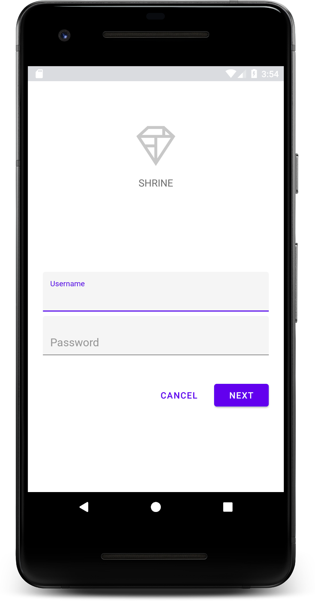
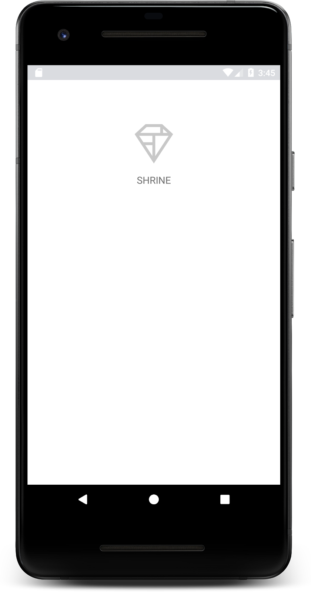
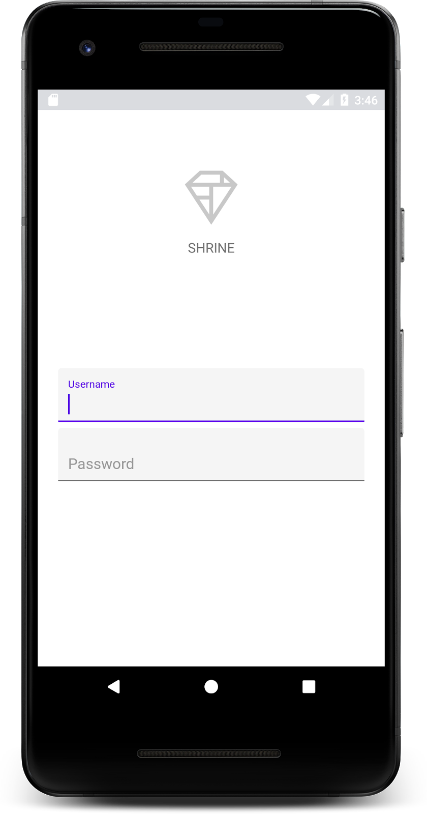
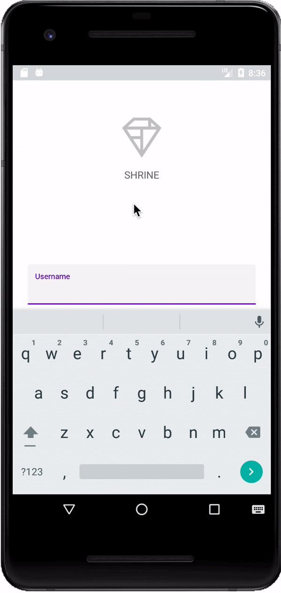
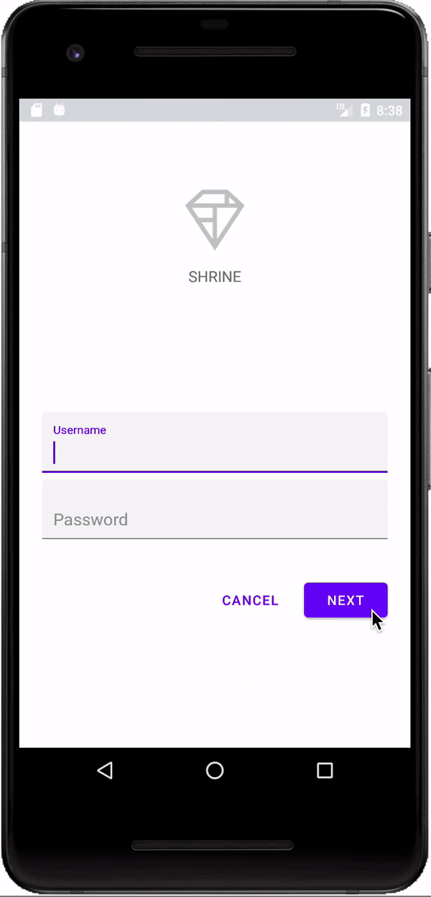

Material Components (MDC) help developers implement Material Design. Created by a team of engineers and UX designers at Google, MDC features dozens of beautiful and functional UI components and is available for Android, iOS, web and Flutter. material.io/develop |

What are Material Design and Material Components for Android?
Material Design is a system for building bold and beautiful digital products. By uniting style, branding, interaction, and motion under a consistent set of principles and components, product teams can realize their greatest design potential.
For Android applications, Material Components for Android (MDC Android) unites design and engineering with a library of components for creating consistency across your application. As the Material Design system evolves, these components are updated to ensure consistent pixel-perfect implementation and adherence to Google's front-end development standards. MDC is also available for web, iOS, and Flutter.
In this codelab, you'll build a login page using several of MDC Android's components.
What you'll build
This codelab is the first of 4 codelabs that will guide you through building an app called Shrine, an e-commerce Android app that sells clothing and home goods. It will demonstrate how you can customize components to reflect any brand or style using MDC-Android.
In this codelab, you'll build a login page for Shrine that contains:
- Two text fields, one for entering a username and the other for a password
- Two buttons, one for "Cancel" and one for "Next"
- The name of the app (Shrine)
- An image of Shrine's logo

MDC Android components in this codelab
- Text Field
- Button
What you'll need
- Basic knowledge of Android development
- Android Studio (download it here if you don't already have it)
- An Android emulator or device (available through Android Studio)
- The sample code (see next step)
How would you rate your level of experience building Android apps?
Why are you taking this codelab?
Start up Android Studio
When you open Android Studio, it should display a window titled "Welcome to Android Studio". However, if this is your first time launching Android Studio, go through the Android Studio Setup Wizard steps with the default values. This step can take several minutes to download and install the necessary files, so feel free to leave this running in the background while doing the next section.
Download the starter codelab app
The starter app is located within the material-components-android-codelabs-101-starter/java directory.
...or clone it from GitHub
To clone this codelab from GitHub, run the following commands:
git clone https://github.com/material-components/material-components-android-codelabs cd material-components-android-codelabs/ git checkout 101-starter
Load the starter code in Android Studio
- Once the setup wizard finishes and the Welcome to Android Studio window is shown, click Open an existing Android Studio project. Navigate to the directory where you had installed the sample code, and select java -> shrine (or search your computer for shrine) to open the Shrine project.
- Wait a moment for Android Studio to build and sync the project, as shown by activity indicators along the bottom of the Android Studio window.
- At this point, Android Studio might raise some build errors because you are missing the Android SDK or build tools, such as the one shown below. Follow the instructions in Android Studio to install/update these and sync your project.

Add project dependencies
The project needs a dependency on the MDC Android support library. The sample code you downloaded should already have this dependency listed, but it is good practice to do the following steps to make sure.
- Navigate to the
appmodule'sbuild.gradlefile and make sure that thedependenciesblock includes a dependency on MDC Android:
api 'com.google.android.material:material:1.1.0-alpha06'
- (Optional) If necessary, edit the
build.gradlefile to add the following dependencies and sync the project.
dependencies {
api 'com.google.android.material:material:1.1.0-alpha06'
implementation 'androidx.legacy:legacy-support-v4:1.0.0'
implementation 'com.android.volley:volley:1.1.1'
implementation 'com.google.code.gson:gson:2.8.5'
implementation "org.jetbrains.kotlin:kotlin-stdlib-jdk7:1.3.21"
testImplementation 'junit:junit:4.12'
androidTestImplementation 'androidx.test:core:1.1.0'
androidTestImplementation 'androidx.test.ext:junit:1.1.0'
androidTestImplementation 'androidx.test:runner:1.2.0-alpha05'
androidTestImplementation 'androidx.test.espresso:espresso-core:3.2.0-alpha05'
}
Run the starter app
|

Success! The starter code for Shrine's login page should be running in your emulator. You should see the name "Shrine" and the Shrine logo just below it.

Let's take a look at the code. We've provided a simple Fragment navigation framework in our sample code to display fragments and navigate between fragments.
Open up MainActivity.java in the shrine -> app -> src -> main -> java -> com.google.codelabs.mdc.java.shrine directory. It should contain this:
MainActivity.java
package com.google.codelabs.mdc.java.shrine;
import android.os.Bundle;
import androidx.appcompat.app.AppCompatActivity;
import androidx.fragment.app.Fragment;
import androidx.fragment.app.FragmentTransaction;
public class MainActivity extends AppCompatActivity implements NavigationHost {
@Override
protected void onCreate(Bundle savedInstanceState) {
super.onCreate(savedInstanceState);
setContentView(R.layout.shr_main_activity);
if (savedInstanceState == null) {
getSupportFragmentManager()
.beginTransaction()
.add(R.id.container, new LoginFragment())
.commit();
}
}
/**
* Navigate to the given fragment.
*
* @param fragment Fragment to navigate to.
* @param addToBackstack Whether or not the current fragment should be added to the backstack.
*/
@Override
public void navigateTo(Fragment fragment, boolean addToBackstack) {
FragmentTransaction transaction =
getSupportFragmentManager()
.beginTransaction()
.replace(R.id.container, fragment);
if (addToBackstack) {
transaction.addToBackStack(null);
}
transaction.commit();
}
}This activity displays the R.layout.shr_main_activity layout file, defined in shr_main_activity.xml.
You can see that in onCreate(), MainActivity.java starts a Fragment transaction in order to show the LoginFragment. LoginFragment. That is what we will be modifying for this codelab. The activity also implements a navigateTo(Fragment) method, defined in NavigationHost, which lets any fragment navigate to a different fragment.
Command + Click (or Control + Click) shr_main_activity in the activity file to open up the layout file, or navigate to the layout file in app -> res -> layout -> shr_main_activity.xml.
shr_main_activity.xml
<?xml version="1.0" encoding="utf-8"?>
<FrameLayout xmlns:android="http://schemas.android.com/apk/res/android"
xmlns:tools="http://schemas.android.com/tools"
android:id="@+id/container"
android:layout_width="match_parent"
android:layout_height="match_parent"
tools:context=".MainActivity" />Here, we see a simple <FrameLayout> which acts as a container for any fragments the activity displays. Let's open up LoginFragment.java.
LoginFragment.java
package com.google.codelabs.mdc.java.shrine;
import android.os.Bundle;
import android.view.LayoutInflater;
import android.view.View;
import android.view.ViewGroup;
import androidx.annotation.NonNull;
import androidx.fragment.app.Fragment;
/**
* Fragment representing the login screen for Shrine.
*/
public class LoginFragment extends Fragment {
@Override
public View onCreateView(
@NonNull LayoutInflater inflater, ViewGroup container, Bundle savedInstanceState) {
// Inflate the layout for this fragment
View view = inflater.inflate(R.layout.shr_login_fragment, container, false);
// Snippet from "Navigate to the next Fragment" section goes here.
return view;
}
// "isPasswordValid" from "Navigate to the next Fragment" section method goes here
}LoginFragment inflates the shr_login_fragment layout file and displays it in onCreateView(). Let's take a look at the shr_login_fragment.xml layout file to see what the login page looks like.
shr_login_fragment.xml
<?xml version="1.0" encoding="utf-8"?>
<ScrollView xmlns:android="http://schemas.android.com/apk/res/android"
xmlns:app="http://schemas.android.com/apk/res-auto"
xmlns:tools="http://schemas.android.com/tools"
android:layout_width="match_parent"
android:layout_height="match_parent"
android:background="@color/loginPageBackgroundColor"
tools:context=".LoginFragment">
<LinearLayout
android:layout_width="match_parent"
android:layout_height="wrap_content"
android:clipChildren="false"
android:clipToPadding="false"
android:orientation="vertical"
android:padding="24dp"
android:paddingTop="16dp">
<ImageView
android:layout_width="64dp"
android:layout_height="64dp"
android:layout_gravity="center_horizontal"
android:layout_marginTop="48dp"
android:layout_marginBottom="16dp"
app:srcCompat="@drawable/shr_logo" />
<TextView
android:layout_width="wrap_content"
android:layout_height="wrap_content"
android:layout_gravity="center_horizontal"
android:layout_marginBottom="132dp"
android:text="@string/shr_app_name"
android:textAllCaps="true"
android:textSize="16sp" />
<!-- Snippet from "Add text fields" section goes here. -->
<!-- Snippet from "Add buttons" section goes here. -->
</LinearLayout>
</ScrollView>Here, we can see a <LinearLayout> with an <ImageView> at the top, representing the "Shrine" logo.
Following that, there is a <TextView> tag representing the "SHRINE" label. The text for this label is a string resource named @string/shr_app_name. If you Command + Click (or Control + Click) the string resource name, or open app -> res -> values -> strings.xml, you can see the strings.xml file where string resources are defined. When more string resources are added in the future, they will be defined here. Every resource in this file should have a shr_ prefix to denote that they are part of the Shrine app.
Now that you're familiar with the starter code, let's implement our first component.
I was able to complete the setup for this codelab with a reasonable amount of time and effort.
To begin, we'll add two text fields to our login page for people to enter their username and password. We'll use the MDC Text Field component, which includes built-in functionality that displays a floating label and error messages.

Add the XML
In shr_login_fragment.xml, add two TextInputLayout elements with a child TextInputEditText inside the <LinearLayout>, underneath the "SHRINE" label <TextView>:
shr_login_fragment.xml
<com.google.android.material.textfield.TextInputLayout
android:layout_width="match_parent"
android:layout_height="wrap_content"
android:layout_margin="4dp"
android:hint="@string/shr_hint_username">
<com.google.android.material.textfield.TextInputEditText
android:layout_width="match_parent"
android:layout_height="wrap_content"
android:inputType="text"
android:maxLines="1" />
</com.google.android.material.textfield.TextInputLayout>
<com.google.android.material.textfield.TextInputLayout
android:id="@+id/password_text_input"
android:layout_width="match_parent"
android:layout_height="wrap_content"
android:layout_margin="4dp"
android:hint="@string/shr_hint_password">
<com.google.android.material.textfield.TextInputEditText
android:id="@+id/password_edit_text"
android:layout_width="match_parent"
android:layout_height="wrap_content" />
</com.google.android.material.textfield.TextInputLayout>The above snippet represents two text fields, each consisting of a <TextInputLayout> element and a <TextInputEditText> child. The hint text for each text field is specified in the android:hint attribute.
We've included two new string resources for the text field -- @string/shr_hint_username and @string/shr_hint_password. Open strings.xml to see these string resources.
strings.xml
...
<string name="shr_hint_username">Username</string>
<string name="shr_hint_password">Password</string>
...Add input validation
TextInputLayout components provide built-in error feedback functionality.
In order to show error feedback, make the following changes to shr_login_fragment.xml:
- Set the
app:errorEnabledattribute to true on the PasswordTextInputLayoutelement. This will add extra padding for the error message underneath the text field. - Set the
android:inputTypeattribute to "textPassword" on the PasswordTextInputEditTextelement. This will hide the input text in the password field.
With these changes, the text fields in shr_login_fragment.xml should look like this:
shr_login_fragment.xml
<com.google.android.material.textfield.TextInputLayout
android:layout_width="match_parent"
android:layout_height="wrap_content"
android:layout_margin="4dp"
android:hint="@string/shr_hint_username">
<com.google.android.material.textfield.TextInputEditText
android:layout_width="match_parent"
android:layout_height="wrap_content"
android:inputType="text"
android:maxLines="1" />
</com.google.android.material.textfield.TextInputLayout>
<com.google.android.material.textfield.TextInputLayout
android:id="@+id/password_text_input"
android:layout_width="match_parent"
android:layout_height="wrap_content"
android:layout_margin="4dp"
android:hint="@string/shr_hint_password"
app:errorEnabled="true">
<com.google.android.material.textfield.TextInputEditText
android:id="@+id/password_edit_text"
android:layout_width="match_parent"
android:layout_height="wrap_content"
android:inputType="textPassword"/>
</com.google.android.material.textfield.TextInputLayout>Now try running the app. You should see a page with two text fields for "Username" and "Password"!
Check out the floating label animation:

Next, we'll add two buttons to our login page: "Cancel" and "Next." We'll use the MDC Button component, which comes with the iconic Material Design ink ripple effect built-in.
Add the XML
In shr_login_fragment.xml, add a <RelativeLayout> to the <LinearLayout>, underneath the TextInputLayout elements. Then add two <MaterialButton> elements to the <RelativeLayout>.
The resulting XML file should look like this:
shr_login_fragment.xml
<RelativeLayout
android:layout_width="match_parent"
android:layout_height="wrap_content">
<com.google.android.material.button.MaterialButton
android:id="@+id/next_button"
android:layout_width="wrap_content"
android:layout_height="wrap_content"
android:layout_alignParentEnd="true"
android:layout_alignParentRight="true"
android:text="@string/shr_button_next" />
<com.google.android.material.button.MaterialButton
android:id="@+id/cancel_button"
style="@style/Widget.MaterialComponents.Button.TextButton"
android:layout_width="wrap_content"
android:layout_height="wrap_content"
android:layout_marginEnd="12dp"
android:layout_marginRight="12dp"
android:layout_toStartOf="@id/next_button"
android:layout_toLeftOf="@id/next_button"
android:text="@string/shr_button_cancel" />
</RelativeLayout>That's it! When you run the app, an ink ripple will display when you tap each button.

Finally, we'll add some Java code to LoginFragment.java to hook up our "NEXT" button to another fragment. You'll notice that each of the components we added to our layout had an id assigned to it. We will use these ids to reference the components in our code and add some error checking and navigation.
Let's add a private boolean isPasswordValid method in LoginFragment.java underneath onCreateView(), with logic to determine whether or not the password is valid. For the purposes of this demo, we'll just make sure that the password is at least 8 characters long:
LoginFragment.java
/*
In reality, this will have more complex logic including, but not limited to, actual
authentication of the username and password.
*/
private boolean isPasswordValid(@Nullable Editable text) {
return text != null && text.length() >= 8;
}Next, add a click listener to the "Next" button that sets and clears the error based on the isPasswordValid() method we just created. In onCreateView(), this click listener should be placed between the inflater line and the return view line.
Next, let's add a key listener to the password TextInputEditText to listen for key events that would clear the error. This listener should also use isPasswordValid() to check whether or not the password is valid. You can add this directly underneath the click listener in onCreateView().
Your onCreateView() method should now look something like this:
LoginFragment.java
@Override
public View onCreateView(
@NonNull LayoutInflater inflater, ViewGroup container, Bundle savedInstanceState) {
// Inflate the layout for this fragment
View view = inflater.inflate(R.layout.shr_login_fragment, container, false);
final TextInputLayout passwordTextInput = view.findViewById(R.id.password_text_input);
final TextInputEditText passwordEditText = view.findViewById(R.id.password_edit_text);
MaterialButton nextButton = view.findViewById(R.id.next_button);
// Set an error if the password is less than 8 characters.
nextButton.setOnClickListener(new View.OnClickListener() {
@Override
public void onClick(View view) {
if (!isPasswordValid(passwordEditText.getText())) {
passwordTextInput.setError(getString(R.string.shr_error_password));
} else {
passwordTextInput.setError(null); // Clear the error
}
}
});
// Clear the error once more than 8 characters are typed.
passwordEditText.setOnKeyListener(new View.OnKeyListener() {
@Override
public boolean onKey(View view, int i, KeyEvent keyEvent) {
if (isPasswordValid(passwordEditText.getText())) {
passwordTextInput.setError(null); //Clear the error
}
return false;
}
});
return view;
} Now, we can navigate to another fragment. Update the OnClickListener in onCreateView() to navigate to another fragment when error validation succeeds. You can accomplish this by adding the following line to navigate to ProductGridFragment to the else case of the click listener:
LoginFragment.java
...
((NavigationHost) getActivity()).navigateTo(new ProductGridFragment(), false); // Navigate to the next Fragment
...Your click listener should now look as follows:
LoginFragment.java
...
MaterialButton nextButton = view.findViewById(R.id.next_button);
// Set an error if the password is less than 8 characters.
nextButton.setOnClickListener(new View.OnClickListener() {
@Override
public void onClick(View view) {
if (!isPasswordValid(passwordEditText.getText())) {
passwordTextInput.setError(getString(R.string.shr_error_password));
} else {
passwordTextInput.setError(null); // Clear the error
((NavigationHost) getActivity()).navigateTo(new ProductGridFragment(), false); // Navigate to the next Fragment
}
}
});
...This new line of code calls the navigateTo() method from MainActivity to navigate to a new fragment -- ProductGridFragment. Currently this is an empty page which you'll work on in MDC-102.
Now, build the app. Go ahead and press the Next button.
You did it! This screen will be the starting point of our next codelab that you'll work on in MDC-102.
Using basic XML markup and ~30 lines of Java, the Material Components for Android library has helped you create a beautiful login page that conforms to the Material Design guidelines, and also looks and behaves consistently across all devices.
Next steps
The Text Field and Button are two core components in the MDC Android library, but there are many more! You can explore the rest of the components in MDC Android. Alternatively, head over to MDC 102: Material Design Structure and Layout to learn about the top app bar, card view, and grid layout. Thanks for trying Material Components. We hope you enjoyed this codelab!